Login
|
Browse
|
Search
|
Favorites
|
Chat
|
Groups
|
Videos
|
Music
|
Comedy
|
Classifieds
Science Laboratory Safety Signs
Back
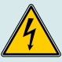
Electrical Hazard Sign
Combustible Materials Sign
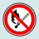
No Open Flames
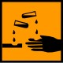
Corrosive Materials Sign
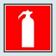
Flammable Symbol
Fire Extinguisher Sign
Toxic Chemical Sign
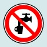
Nonpotable Water Sign
Environmental Hazard Sign
Eyewash Sign
Recycling Sign
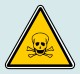
Toxic Materials Sign
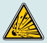
Explosive Material Sign
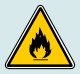
Flammable Sign
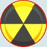
Radioactive Symbol
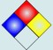
Chemistry Hazard Label
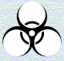
Biohazard Symbol
Home
-
Resources
-
Fact World
-
Math World
-
The Media Center